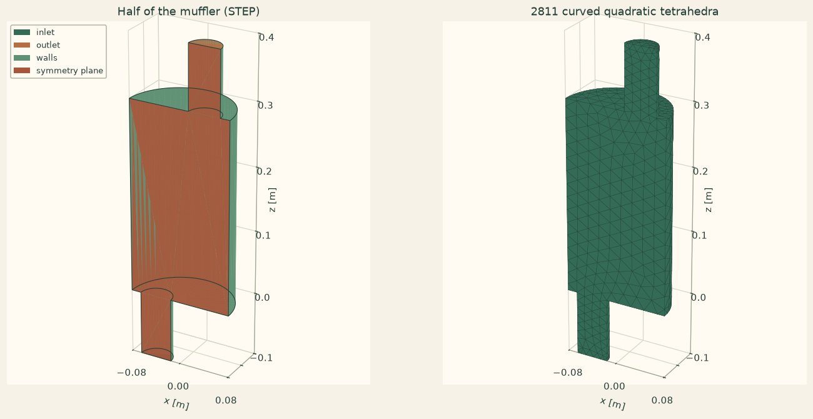

Docs › Examples › Transmission loss of an expansion-chamber muffler
Pressure acoustics, frequency domain · 3D
Transmission loss of an expansion-chamber muffler
A plane wave passes an oval-style expansion chamber with offset inlet and outlet pipes, as in a vehicle exhaust.
Run locally with OneSimulation. The example downloads are free. Running them requires an activated runtime. Runtime Alpha 0.2.1a7 · CPython 3.13 on macOS (Apple Silicon), Ubuntu 22.04 (x86-64), and Windows x64. Installation and activation · View pilot plans. Scope of the reference checks.

What it computes
OneSimulation reads half of the muffler from a STEP file and solves the Helmholtz equation with curved quadratic tetrahedra on two meshes; the inlet is a plane-wave port that absorbs the reflected wave, the outlet is anechoic, and the harmonic pressure provider sweeps 20 Hz to 2 kHz. The transmission loss follows from the incident and the transmitted power. The script that builds the STEP file comes with the notebook.
What it checks
Below the cut-on of the first cross mode (1256 Hz) the transmission loss follows the plane-wave formula: first dome 14.31 dB at 290 Hz against 14.27 dB, pass bands at 575 and 1160 Hz against 572 and 1143 Hz, largest difference 1.55 dB below 1 kHz; the two meshes differ by 0.02 dB, and above the cut-on the offset pipes excite the cross mode and the loss departs from the formula by up to 14 dB.
Geometry
The notebook starts at the import of the CAD file expansion_chamber_muffler.step: STEP (AP242), readable by any CAD program, with the names of the faces that the boundary conditions use. Put it next to the notebook.


The geometry script
The script expansion_chamber_muffler_geometry.py builds the geometry with the CAD objects of OneSimulation and writes the file. Change a dimension there, run it, and run the notebook again.
"""Geometry of the OneSimulation example "Transmission loss of an expansion-chamber muffler".
Builds half of the air in a muffler with the CAD objects of OneSimulation: a cylindrical chamber
(radius 80 mm, length 300 mm) with an inlet pipe and an outlet pipe (radius 25 mm, length 100 mm),
offset by 40 mm to opposite sides of the axis. The muffler is cut in its plane of symmetry y = 0.
It writes expansion_chamber_muffler.step with the faces inlet, outlet, symmetry and walls.
"""
from onesim.cad.d3 import Box, Cylinder
chamber_radius, chamber_length, pipe_radius, pipe_length, offset = (
0.08,
0.30,
0.025,
0.10,
0.04,
)
muffler = (
Cylinder(radius=chamber_radius, length=chamber_length)
| Cylinder(
radius=pipe_radius, length=pipe_length, origin=(-offset, 0.0, -pipe_length)
)
| Cylinder(
radius=pipe_radius, length=pipe_length, origin=(offset, 0.0, chamber_length)
)
)
half = muffler - Box(length=0.4, width=0.2, height=0.8, origin=(-0.2, -0.2, -0.2))
plane = lambda z: (
lambda face: face.kind == "plane"
and abs(abs(face.normal[2]) - 1) < 1e-9
and abs(face.center[2] - z) < 1e-9
)
inlet, outlet = half.select(faces=plane(-pipe_length)), half.select(
faces=plane(chamber_length + pipe_length)
)
symmetry = half.select(
faces=lambda face: face.kind == "plane" and abs(abs(face.normal[1]) - 1) < 1e-9
)
walls = half.select(
faces=lambda face: not (
face.kind == "plane"
and (
abs(abs(face.normal[1]) - 1) < 1e-9
or abs(face.center[2] + pipe_length) < 1e-9
or abs(face.center[2] - chamber_length - pipe_length) < 1e-9
)
)
)
half = half.grouped(inlet=inlet, outlet=outlet, symmetry=symmetry, walls=walls)
half.save("expansion_chamber_muffler.step")The notebook
The complete notebook, cell by cell. Run it to produce the figures and the comparison printout.
The simplest reactive muffler is a sudden widening of the exhaust pipe: a chamber of length \(L=0.3\) m and radius 80 mm between pipes of radius 25 mm. The two area jumps reflect part of the sound back towards the engine. Here inlet and outlet sit 40 mm off the axis on opposite sides, as they often do in vehicles. The field is symmetric about the plane through both pipe axes, so half of the muffler is computed:
| boundary | condition |
|---|---|
| inlet | incoming plane wave \(p_\mathrm{in}\), reflected wave absorbed: \(v_n=(p-2p_\mathrm{in})/(\rho_0c)\) |
| outlet | anechoic, \(v_n=p/(\rho_0c)\) |
| walls | rigid, \(\partial p/\partial n=0\) |
| symmetry plane \(y=0\) | \(\partial p/\partial n=0\) |
The transmission loss compares the incident power with the power that leaves through the outlet, \(TL=10\log_{10}(W_\mathrm{in}/W_\mathrm{out})\), with \(W_\mathrm{in}=|p_\mathrm{in}|^2S/(2\rho_0c)\) and \(W_\mathrm{out}=\int|p|^2\,\mathrm dS/(2\rho_0c)\).
Reference. For plane waves the chamber is a transmission-line section, and with the area ratio \(m=(R/r)^2\) (L. E. Kinsler et al., Fundamentals of Acoustics, 4th ed., §10.10; M. L. Munjal, Acoustics of Ducts and Mufflers, 2nd ed., §3.5)
The formula holds while only plane waves propagate in the chamber. The first cross mode, which the offset pipes excite, cuts on at \(f_{11}=1.8412\,c/(2\pi R)=1256\) Hz; above it the three-dimensional field departs from the formula.
import numpy as np
from onesim.cad.exchange import load
from onesim.meshing import TetrahedralMesher
from onesim.numerics.fem import FiniteElement, Lagrange
from onesim.physics.acoustics import (
AcousticHarmonicPressure,
ComplexPressurePencil,
ConstantPressureForms,
PressureAdmittanceBoundary,
PressureTraceSamples,
SampledPressureAdmittanceForms,
SampledPressureVolumeForms,
pressure_space_volume_samples,
)
from onesim.visualization import plots, theme
from scipy.sparse.linalg import spsolve
theme.set()
c0, rho0, incident = 343.0, 1.204, 1.0
impedance = rho0 * c0
chamber_radius, chamber_length, pipe_radius = 0.08, 0.30, 0.025
frequencies = np.arange(20.0, 2001.0, 15.0)Geometry and mesh
load returns the half muffler with the named faces inlet, outlet, walls and symmetry. Curved quadratic tetrahedra of 20 mm (an eighth of the shortest wavelength) and, for the mesh study, 14 mm fill it.
muffler = load("expansion_chamber_muffler.step")
faces = muffler.boundaries
sizes = (0.020, 0.014)
meshes = {
h: TetrahedralMesher(target_size=h, geometry_order=2).generate(muffler)
for h in sizes
}
view = plots.Camera(elevation=25, azimuth=-60)
fig = plots.figure(1, 2, size=(15, 7))
plots.geometry(
muffler,
selection={
"inlet": faces.inlet,
"outlet": faces.outlet,
"walls": faces.walls,
"symmetry plane": faces.symmetry,
},
labels=False,
camera=view,
title="Half of the muffler (STEP)",
ax=fig[0],
)
plots.mesh(
meshes[0.020],
groups=("all",),
legend=False,
camera=view,
title=f"{meshes[0.020].cell_count} curved quadratic tetrahedra",
ax=fig[1],
)
plots.show()Model
Quadratic Lagrange elements; SampledPressureVolumeForms integrates the volume forms and the traces of inlet and outlet come from the space's trace_data. Both ports carry the admittance \(1/\rho_0c\), the inlet also the load \(2i\omega p_\mathrm{in}/(\rho_0c)\int\phi_i\,\mathrm dS\) of the incoming wave. AcousticHarmonicPressure sweeps 20 Hz to 2 kHz.
def solve_muffler(h):
"""Pressure over the sweep on one mesh, and the transmission loss."""
mesh = meshes[h]
space = FiniteElement(element=Lagrange(order=2)).bind_space(mesh)
volume = ConstantPressureForms(
*SampledPressureVolumeForms(
size=space.dof_count,
samples=lambda: pressure_space_volume_samples(space),
inverse_density=lambda omega, sample: 1 / rho0,
compressibility=lambda omega, sample: 1 / impedance / c0,
)(0.0)
)
ports = {
face: SampledPressureAdmittanceForms(
size=space.dof_count,
admittance=lambda omega, sample: 1.0,
samples=lambda face=face: iter(
[
PressureTraceSamples(space.cell_dofs[owner], points, weights, basis)
for owner, points, weights, _, basis, _ in map(
space.trace_data, mesh.facets(getattr(faces, face))
)
]
),
)(0.0)
for face in ("inlet", "outlet")
}
boundary = PressureAdmittanceBoundary(
lambda omega: (ports["inlet"] + ports["outlet"]) / impedance
)
drive = ports["inlet"] @ np.ones(space.dof_count)
result = AcousticHarmonicPressure(
operator=ComplexPressurePencil(volume, boundary=boundary),
angular_frequencies=2 * np.pi * frequencies,
load=lambda omega: 2j * omega * incident / impedance * drive,
linear_solver=spsolve,
).run()
transmitted = np.real(
np.sum(result.pressure.conj() * (ports["outlet"] @ result.pressure.T).T, axis=1)
) / (2 * impedance)
supplied = incident**2 * drive.sum() / (2 * impedance)
return dict(
space=space,
mesh=mesh,
pressure=result.pressure,
dofs=space.dof_count,
tl=10 * np.log10(supplied / transmitted),
)
runs = {h: solve_muffler(h) for h in sizes}Results
Transmission loss against the plane-wave formula, below and above the cut-on of the first cross mode.
m = (chamber_radius / pipe_radius) ** 2
k = 2 * np.pi * frequencies / c0
plane_wave = 10 * np.log10(
1 + 0.25 * (m - 1 / m) ** 2 * np.sin(k * chamber_length) ** 2
)
cut_on = 1.8412 * c0 / (2 * np.pi * chamber_radius)
below = frequencies < 1000
fine = runs[sizes[-1]]
for h, run in runs.items():
print(
f"mesh {1e3 * h:.0f} mm, {run['dofs']} unknowns: largest |TL - plane-wave TL| below 1 kHz "
f"{np.max(np.abs(run['tl'] - plane_wave)[below]):.2f} dB"
)
print(
f"largest change between the meshes over the whole sweep {np.max(np.abs(runs[sizes[0]]['tl'] - fine['tl'])):.2f} dB"
)
for low, high in ((0, 572), (572, 1143)):
band = (frequencies > low) & (frequencies < high)
print(
f"dome {low}-{high} Hz: peak TL simulation {fine['tl'][band].max():.2f} dB at {frequencies[band][np.argmax(fine['tl'][band])]:.0f} Hz, "
f"plane-wave formula {plane_wave[band].max():.2f} dB at {frequencies[band][np.argmax(plane_wave[band])]:.0f} Hz"
)
passes = [
f
for f, previous, current, following in zip(
frequencies[1:-1], fine["tl"][:-2], fine["tl"][1:-1], fine["tl"][2:]
)
if current < min(previous, following) and f < cut_on
]
print(
"pass bands (TL minima) below the cut-on [Hz]:",
", ".join(f"{f:.0f}" for f in passes),
"| plane wave: n c / (2L) =",
", ".join(
f"{n * c0 / (2 * chamber_length):.0f}" for n in range(1, len(passes) + 1)
),
)
print(
f"first cross mode cuts on at {cut_on:.0f} Hz; above it the largest |TL - plane-wave TL| is "
f"{np.max(np.abs(fine['tl'] - plane_wave)[frequencies > cut_on]):.1f} dB"
)Figure
Left: the sound pressure level on the walls and the symmetry plane at 1.7 kHz, where the first cross mode fills the chamber. Right: the transmission loss over frequency.
i = int(np.argmin(np.abs(frequencies - 1700)))
points = np.asarray(fine["mesh"].coordinates)
level = 20 * np.log10(
np.abs(np.asarray(fine["space"].evaluate(fine["pressure"][i], points))) / 2e-5
)
fig = plots.figure(1, 2, size=(17, 7))
plots.trisurface(
points,
np.asarray(fine["mesh"].facets(faces.walls | faces.symmetry)),
level,
camera=view,
limits=(level.max() - 30, level.max()),
label="sound pressure level [dB]",
title=f"{frequencies[i]:.0f} Hz, incoming wave 1 Pa",
ax=fig[0],
)
plots.line(
frequencies,
{f"simulation, {1e3 * h:.0f} mm mesh": run["tl"] for h, run in runs.items()},
reference={"plane-wave formula": plane_wave},
vlines={"cut-on of the first cross mode": cut_on},
xlabel="frequency [Hz]",
ylabel="transmission loss [dB]",
title="Transmission loss",
legend="upper left",
ax=fig[1],
)
plots.show()Going further
Put the pipes on the axis in expansion_chamber_muffler_geometry.py and write the STEP file again: the cross mode is no longer excited and the formula holds up to the first axisymmetric mode at 2.6 kHz. A perforated pipe through the chamber, or an absorbing lining as a complex density and compressibility, turns the reactive muffler into an absorptive one.